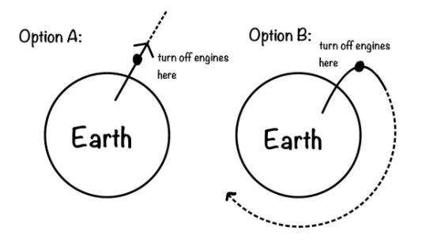

Ouside of the Earth
Let’s keep thinking about that rocket. How would it move if it turned off its engines right after it got out of Earth’s atmosphere (into space)? Would it move in a straight line? A circle? Look at the two options below and write down your guess. (As always, don’t be afraid of getting things wrong!)

In order to understand this better, let’s clarify a few concepts.
Any two objects have a gravitational attraction between them. Technically, your computer is pulling you towards it right now(!) - it’s just that the computer has very little mass so this attraction doesn’t do very much. However, as you walk away from your computer, the gravitational attraction between you and your computer gets even smaller.
On Earth, in order to keep flying forward, an airplane has to keep its engines running at all times. This is because of air resistance. However, in space there is no air. This means that if a rocket turns off its engines, it won’t speed up anymore… but it won’t slow down either- there’s no air making it slow down! So if a rocket turns off its engines once it is in space, it will keep moving at the same speed it was before the engines were turned off.
This is why we aren’t pulled off the Earth towards the sun. Even though the sun has more mass than the Earth, the sun is so far away that it pulls us much less than the Earth does.
Now let’s get back to the original question. What happens when the rocket turns off its engines right after it gets into space?
When the rocket turns off its engines, it stops pushing against the Earth’s gravity.
Because Earth’s gravity wants to pull the rocket back down to Earth, it begins to fall. However, it’s still moving very fast (remember- no air resistance in space)! Since it’s moving so fast, it misses the Earth as it falls. This happens over and over again - gravity keeps trying to pull the rocket down, but because the rocket is moving fast it keeps missing the Earth. This causes the rocket to start orbiting the Earth, kind of like the moon.
Play around with the simulation below to see how changing the mass of the two bodies impacts the shape of their orbits. (Remember that changing the mass changes the gravity between the bodies, which is why the orbits change!)
- The ^ symbol in the simulation means the number of zeroes that number has. For example 6*10^24 (Earth's mass) is the number 6 with
24 zeroes! The Earth is huge! (All mass is in kilograms.)
Try to make an orbit that looks similar to the orbit of the Earth around the sun. Maybe try making two stars and see how they orbit around each other. Explore!
Why do you think the orbit of two objects with very different masses looks different than the orbit of two objects with the same mass? Try comparing the original orbit (small body: 6*10^24, large body 2*10^30) with the orbit when the small body is at exponent 29 (6*10^29) and the large body is at exponent 30 (2*10^30).